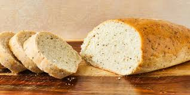

Fancy Italian Bread Recipe

Are you ready to make the crispiest loaf of bread ever.
come with me on this amazing journey of bread making
Ingredients
- 4 cups of wheat unbleached flour
- 2 tsp of instant yeast
- 2 tsp of sea salt
- 1 1/2 of warm water
instructions
- put together all the dry Ingredients into one bowl and mix them together
- slowly add the water and mix together with the dry Ingredients
- keep mixing until the dough does not stick to your hand
- place towel over the bowl when your done mixing
let the dough rise for one hour
- turn over on for 400Degs
- grease up your cooking sheet then cook your dough